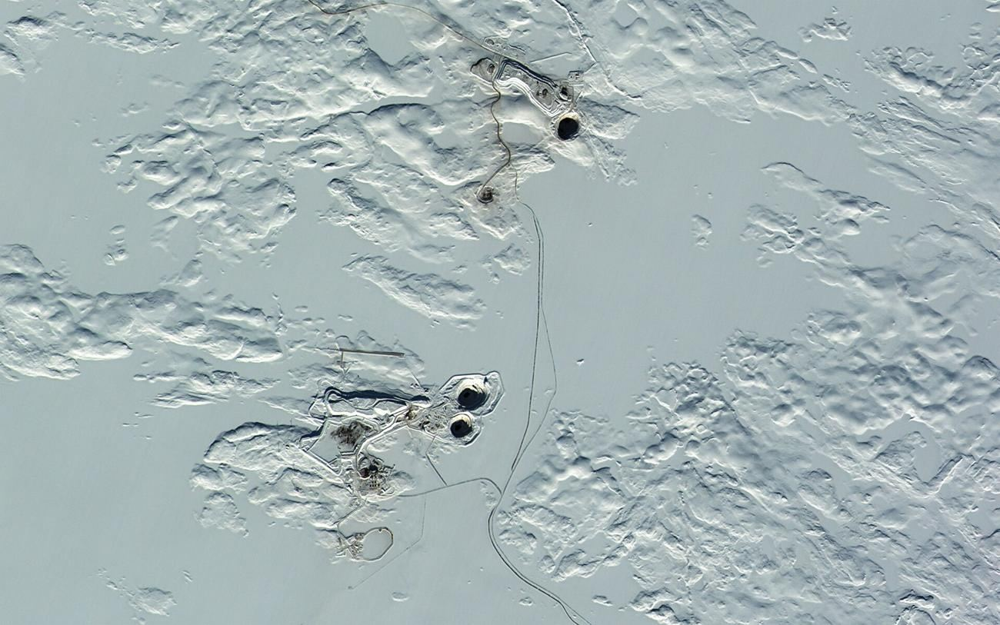

33,000 carats after the end: Diavik sweeps its own floor
Rio Tinto's Canadian mine closed in March. The second quarter still yielded 33,000 carats from remaining ore — down 97% — and first-half output fell 51% to 1.1 million carats. Sales run through year-end. Then a 154-year-old miner is out of diamonds.

§1Leftovers, by the ton.
The last chapter of Rio Tinto's diamond business is being written in leftovers. The company's second-quarter operations review, reported by Rapaport on Monday, shows 33,000 carats recovered at Diavik between April and June — not from mining, which ended when the Northwest Territories operation reached the close of its life in March, but from processing the ore that remained on surface. Output fell 97% from both the prior quarter and the year before, the arithmetic of a mine that no longer exists.
For the half, Diavik produced 1.1 million carats, down 51% from the first six months of 2025. Rio Tinto says it will continue to process and sell its final production through the end of 2026, which gives the market roughly five more months of Canadian goods carrying the Diavik name before the tap closes entirely.
Diavik was the last diamond asset on the books of a company that has decided its future is copper, iron ore and lithium.
§2An arc closes.
The exit completes an arc two decades long. Argyle in Australia — once the world's largest producer by volume and the source of nearly all its pink diamonds — closed in 2020. The stake in Fort à la Corne in Saskatchewan was sold in 2023. Diavik was the last diamond asset on the books of a company that has decided its future is copper, iron ore and lithium. One wrinkle survives the funeral: Rio Tinto is keeping diamond exploration alive in Angola, the same ground where De Beers and Endiama have been mapping new kimberlites.
§3Three names subtract at once.
The supply math thickens a story this page has been tracking all month. Burgundy's Ekati went dark in June; Diavik is now processing its own remnants; De Beers has paused Venetia's underground for two years. Three of the industry's storied names are subtracting carats at once, into a rough market that De Beers just repriced downward — a reminder that supply discipline is arriving the hard way, by exhaustion rather than by choice.
Majors do not keep exploration teams in Angola out of nostalgia — Rio Tinto is leaving the mine, not the idea of diamonds.
The industry should read the 33,000 carats accordingly: an ending, with a bookmark in it.
The trade, filed to your inbox before the New York open.
Prices, tenders and the one story that moved the industry overnight — read in ninety seconds.
Subscribe free →